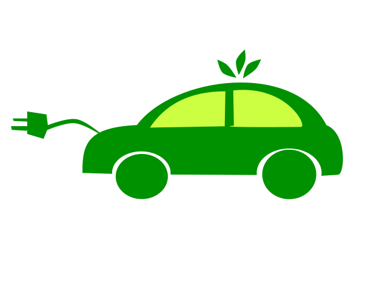

Autonomous Vehicles
What is it?
An autonomous vehicle by definition 'is a vehicle capable of sensing it’s environment and operating without human involvement'. Autonomous Vehicles (AV’s) are cars, buses, trucks and anything that is on our roads that are operated by a computer rather than a human being.
What can be done now?
Currently AVs (Autonomous vehicles) are at a state of automation that is known as level 3 automation which, in vehicles, means that the computer can control 2 or more simultaneous driving functions of the car such as cruise control and lane keeping. At the forefront of this technology level 4 automation has been achieved which is one step away from being fully autonomous. Level 4 automation was only achieved on a controlled course in clear weather, but it does demonstrate what is being worked towards. There are many factors currently holding us back from fully autonomous vehicles and it is not just technological. Various issues that arise around the discussion of AV’s are moral contention and government regulation.
Issues holding back AVs
Responsibility
Who is responsible if there was an incident involving an AV (Autonomous vehicle)? Who is to blame? Who is classed as the “driver”? Who should be held accountable? If the car is driving itself, is the manufacturer blamed? Is the person in the driver seat? Or is it the registered owner of the car?
Tusting Computers
How can we trust a computer to choose what happens in an incident if there are other human lives at stake. How can we trust a computer to choose what happens?
Government Regulation
Due to a combination of these of multiple factors, governments around the world are hesitant when it comes to the safety of AVs and struggle to allow the innovative technology to be tested; let alone be permitted on public roads.
What is likley to be available soon?
It is likely rather than seeing level 4 and 5 AVs on our road there will be a big push to make what we currently have available more refined and accessible to as many people as possible. The more people we have experiencing automated vehicles, the easier it will be for everyone to accept this new technology in everyday life and allow us to advance in this field. The more refined and accessible we make this technology to everyone; the more people will welcome and enjoy autonomous vehicles rather than it being a foreign concept to the general public
What is the potential impact of this?
AVs will affect most people on our roads today, AVs have the capability of making our roads safer, smarter, and faster. If all vehicles on the road were fully autonomous human error would be a thing of the past. At the same time this would also impact a considerable number of jobs and many people's livelihoods.
Benefits of AVs
If all the cars on our road were autonomous it would take out a significant amount of risk when traveling by car, drunk/drug drivers would no longer be affecting our roads, traffic would flow more efficiently, and human error would no longer be a factor when it comes to accidents on our roads. Car crashes in general would be significantly reduced and although we cannot guarantee that there will not be accidents at all, our roads would be a lot safer
Downsides of AVs
As amazing as fully autonomous roads sound there are many downsides with the main being job loss, companies such as Uber and DiDi have made it easy for people who own a car get a job and it has become so common to earn money from these rideshare apps that people have built a life as a driver. It will not only be rideshare drivers out of a job; bus drivers, truck drivers, and taxi drivers would all be at risk of being replaced by computers.
How could this affect you?
In my daily life having an AV would be a time saver personally for me driving takes up a good chunk of my day as commuting to work is over an hour each way. I would be able to get that time back to focus on doing other things during my commute rather than having to focus on the road. In terms of family and friends around me I do know a few people who rely on driving as a job and for them a change like this affects them in a much more negative way and unfortunately that is another struggle with the progression of AVs with how much job loss, they could cause it is hard to justify going fully autonomous.
Autonomous Vehicles are a natural progression towards the future of cars, we have imagined a future where cars drive themselves since cars were created and we’re so close to achieving it. But until we can solve the multiple ethical issues and find a way to replace all the jobs that would be lost, fully autonomous vehicles will remain a thing of the future. This does not mean we should stop innovating but we should make this technology more available to the masses to allow more people to get a taste of the future.
Bibliography
Synopsys(2022) What is an Autonomous Car, Synopsys Website, accessed 10th of July 2022
https://www.synopsys.com/automotive/what-is-autonomous-car.htmlWikipedia(2022) Self-driving car, Wikipedia Website, accessed 10th of July 2022
https://en.wikipedia.org/wiki/Self-driving_carThe Converstation(2021) 'Self-driving’ cars are still a long way off. Here are three reasons why, The Converstation Website, accessed 11th of July 2022
https://theconversation.com/self-driving-cars-are-still-a-long-way-off-here-are-three-reasons-why-159234